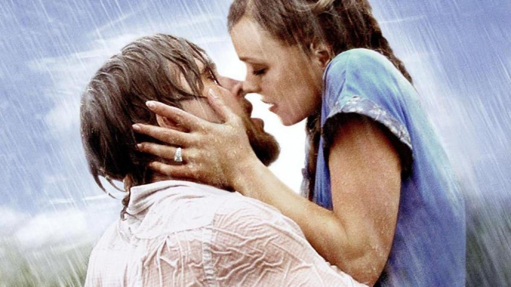

Cine romántico
 es un género cinematográfico que se caracteriza por retratar argumentos construidos de eventos y personajes relacionados con la expresión del amor y las relaciones románticas. El cine romántico se centra en la representación de una historia amorosa de dos participantes, la cual atraviesa las principales etapas de la concepción del amor como el cortejo y el matrimonio .
Historia
- Una de las primeras obras fílmicas considerada como cine romántico fue el cortometraje de 1896 de William Heise
- La temática del amor entre dos personas se comercializó y comenzaron a surgir numerosos títulos fílmicos que retrataban el amor durante las primeras tres décadas del siglo XX en el periodo del cine mudo.
- Al amor como argumento principal fueron Camille (1915) dirigida por Albert Capellani, Intolerancia (1916)
- El cine romántico obtuvo gran popularidad con la llegada del cine sonoro, lo que permitió un mayor entendimiento de la audiencia y un aumento en la complejidad de la producción fílmica.
- Es en los años 50 cuando el cine romántico alcanza su mayor auge durante la producción fílmica de la época dorada de Hollywood.